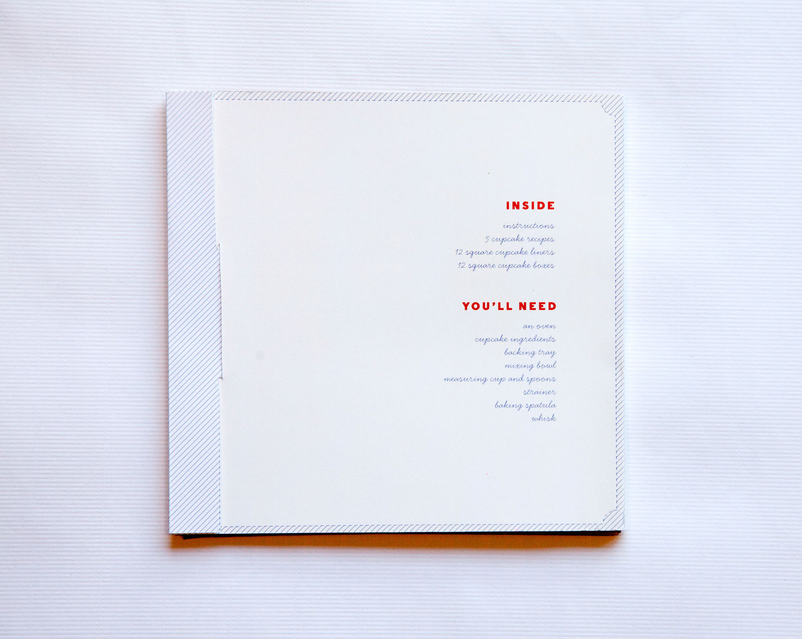
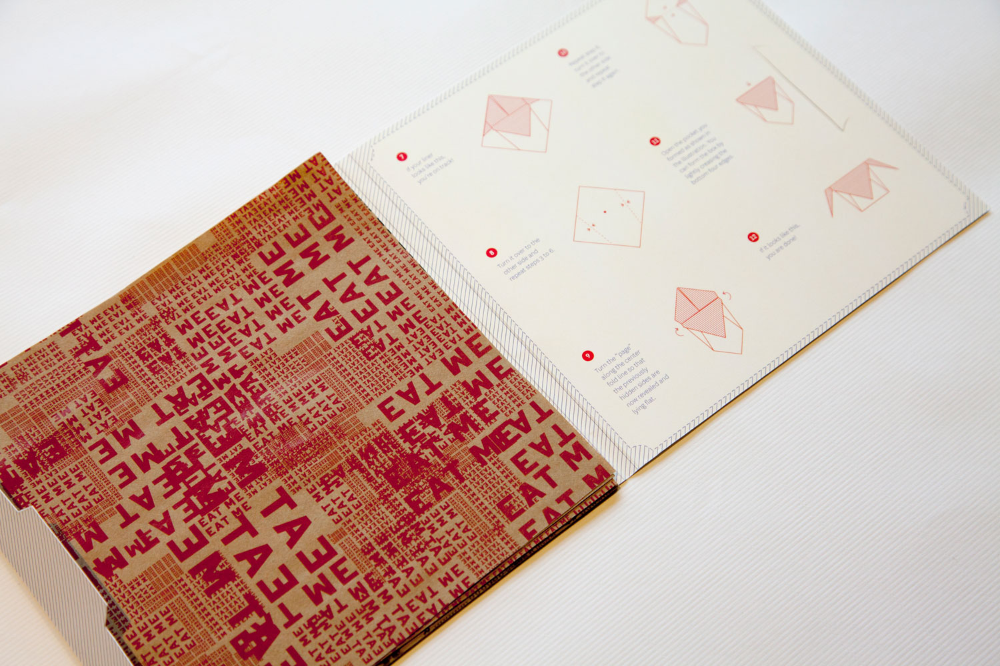
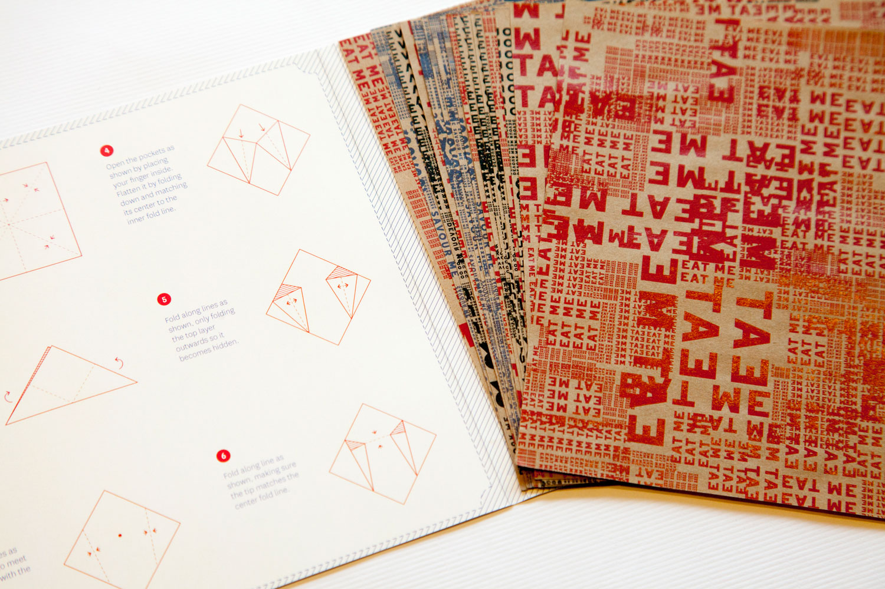
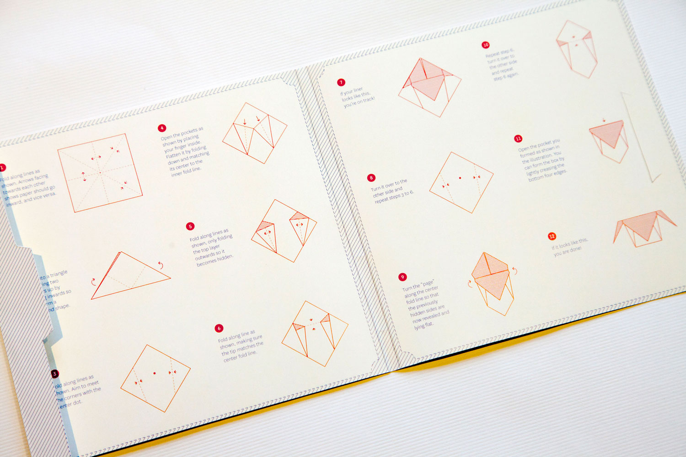
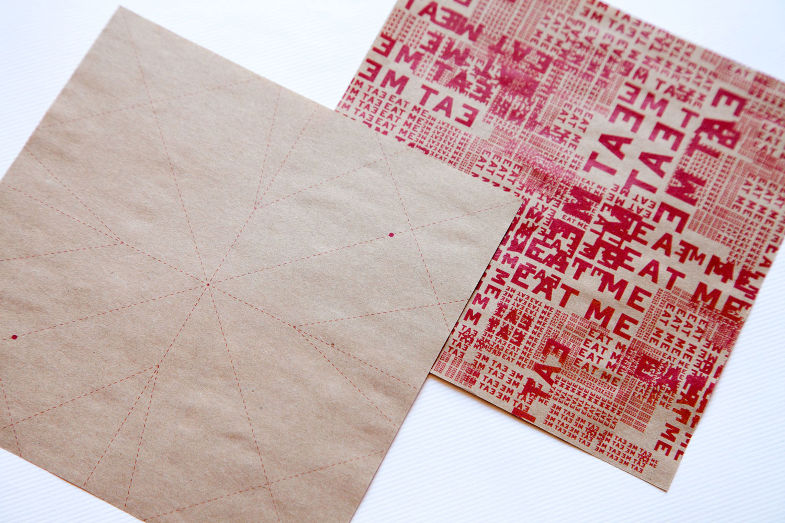

Origami Cupcake Liners
chronicle books design fellowship
The creative director asked us to design and pitch concept ideas for a product that could be a "clever container." I presented the editors with a physical prototype of an Origami Square Cupcake Liner Kit. The kit contains 12 patterned square sheets of paper and origami instructions for making square cupcake liners.incorporating interaction
I wanted to create a product that allows users to interact with it intimately, not just put things in it. I also researched materials extensively, both for the container itself and what could be contained. Paper is a versatile material that is easy to handle, has great interactive potential, and can also have a refined quality. Although I could easily design any origami container, I wanted to take a step further and make the experience even more unique to the make the product more valuable somehow.solution
I came up with the idea of an origami liner kit, which combines baking and packaging with more user interaction. The end-product of liners provide bakers with a unique packaging material to make their cupcakes more special and attractive, while the origami kit also creates a fun experience that makes the cupcake liners feel more personal to the user.process
I designed the liners, packaging, and origami instructions.
The kit cover has a photo of the end product modeled by a delicious cupcake.




Instructions are provided on the interior of the kit packaging to make it more robust and harder to lose.

Liners have guidelines to make it easier for users to follow the instructions.